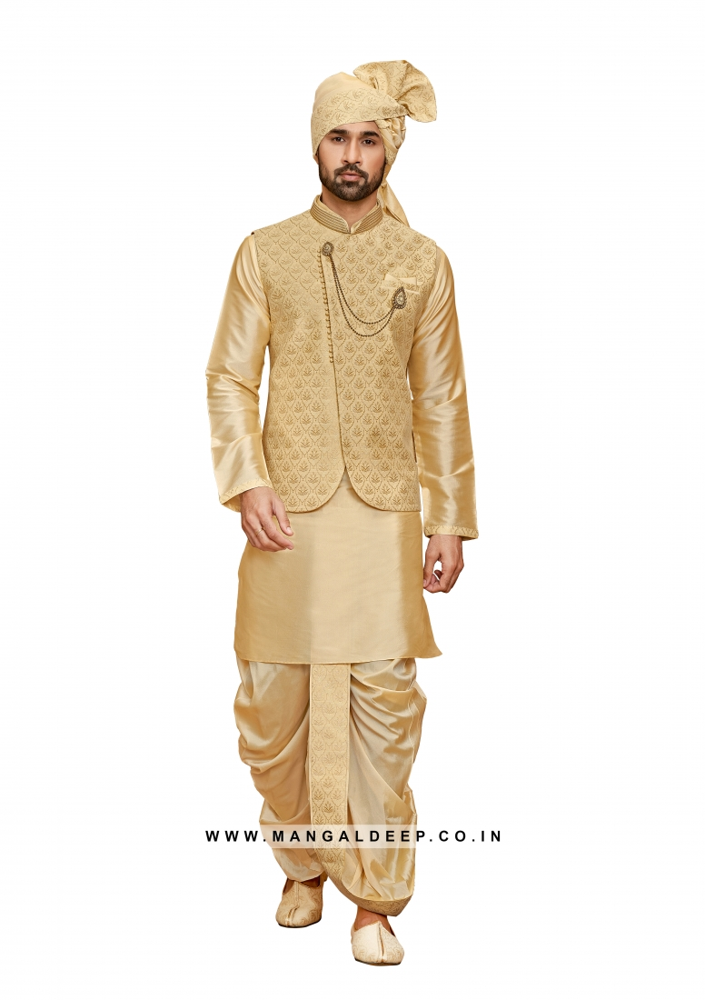

Kurta with Dhoti or pyjamas
In some rural regions of Odisha, men wear cotton kurtas with dhoti draped around the waist. The dhotis in Odisha are unique and come in alluring brick colour borders. The traditional dress of Odisha is incomplete without a pyjama. They are usually plain white.